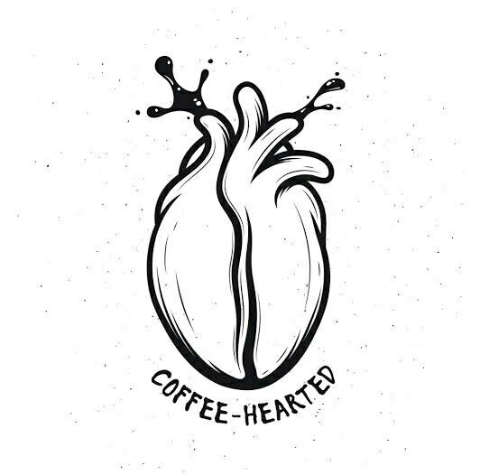
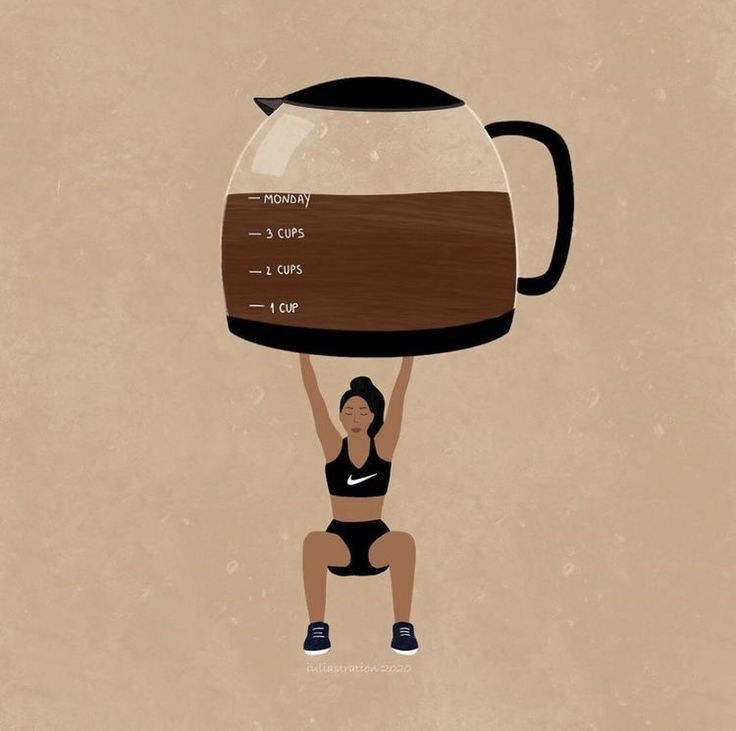

No es solo café. Es inspiración y felicidad.
Descubre lo que es el placer en cada sorbo con el café de más alta calidad
Comprar AhoraDescubre los beneficios de tomar un buen café
Energía Al Instante
Mejor Humor En Cada Taza
Afilado Mental
Escudo Contra Enfermedades
Antioxidantes Abundantes
Potenciador De Rendimiento Físico

Aliado en la Pérdida de Peso
Prevención De Diabetes
Características de nuestro café
Cuerpo Balanceado
Posee una textura suave y aterciopelada que es perfecta para cualquier momento del día.

Café 100% Bourbon Rojo
Comprometidos con la sostenibilidad, nuestro café proviene de fincas que practican métodos de cultivo ecológicos, asegurando no solo la calidad sino también el respeto por el medio ambiente.
Café De Media Altura
Nuestro café proviene de cultivos de media altura, ofreciendo un perfil de sabor único que resalta la dulzura natural, ideal para los amantes del buen café.
Aroma Envolvente
Disfruta de un aroma profundo y envolvente con notas de chocolate y caramelo, un preludio perfecto a la experiencia de sabor que ofrece cada sorbo.

Textura Ideal
La molienda fina de nuestro café Bourbon facilita una extracción óptima, resultando en una bebida suave pero robusta, ideal para métodos de preparación como espresso o cafetera de filtro.
Experiencia garantizada
Cada paquete de nuestro café Bourbon molido representa nuestro compromiso con la calidad. Garantizamos una experiencia cafetera superior, satisfaciendo desde el paladar más exigente hasta el bebedor casual de café.
Nuestro Café
Café Premium
Sabor intenso y aroma envolvente
Precio: $5.99
Café Premium
Sabor intenso y aroma envolvente
Precio: $5.99
Café Premium
Sabor intenso y aroma envolvente
Precio: $5.99
Café Premium
Sabor intenso y aroma envolvente
Precio: $5.99
Café Premium
Sabor intenso y aroma envolvente
Precio: $5.99
Café Premium
Sabor intenso y aroma envolvente
Precio: $5.99
Testimonios De Clientes
"La calidad del café es sobresaliente. ¡Es perfecto para comenzar el día!"
Juan Recinos

"¡Impresionante! El aroma y el sabor del café son consistentes y cada taza es un verdadero placer. Es, sin duda, mucho mejor que Starbucks y esas empresas que venden un mal café"
Julio Cáceres

"El café es aceptable, aunque esperaba un sabor un poco más intenso. No está mal, pero creo que hay espacio para mejorar en términos de sabor y aroma."
Karla Abrego
"Cada vez que compro café de aquí, sé que estoy obteniendo calidad. La atención al detalle y el cuidado en su producción se nota en cada taza. ¡Totalmente recomendado!"
Luis Merino